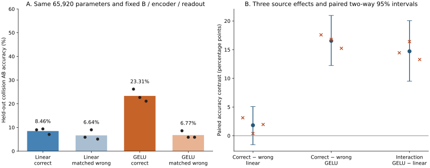

在这三个新源和新留出测试上，非线性扩大了正确配对相对答案匹配错配的复合准确率优势，符合事先登记的方向预测。
已完成 12 个固定 2,000 步的第一算子拟合，3 个新源初始化（11261, 12373, 13487）。主终点为碰撞样本 AB 准确率的交互作用：+14.71 [+9.51, +20.05] 个百分点。区间由三个源与 128 对共享测试样本双向重采样得到；三个源仍不足以估计广泛的源间变化。

| 第一算子 | 碰撞 AB | 配对双正确 | 单步 A | 第一状态 NMSE | 复合状态 NMSE | 复合 CKA |
|---|---|---|---|---|---|---|
| 原始冻结算子 | 5.86% | 0.26% | 99.87% | 0.05444 | 1.20896 | 0.0103 |
| 两层线性／正确 | 8.46% | 0.52% | 99.87% | 0.04514 | 1.18587 | 0.0178 |
| 两层线性／错配 | 6.64% | 0.78% | 99.87% | 0.07171 | 1.11983 | 0.0147 |
| 两层 GELU／正确 | 23.31% | 3.91% | 99.87% | 0.01753 | 0.82211 | 0.3785 |
| 两层 GELU／错配 | 6.77% | 1.04% | 99.87% | 0.07584 | 1.10901 | 0.0163 |
| 源种子 | 线性正确 | 线性错配 | GELU 正确 | GELU 错配 | 线性正确差 pp | GELU 正确差 pp | 交互 pp |
|---|---|---|---|---|---|---|---|
| 11261 | 8.98% | 5.86% | 26.17% | 8.59% | +3.12 | +17.58 | +14.45 |
| 12373 | 9.38% | 8.98% | 22.66% | 5.86% | +0.39 | +16.80 | +16.41 |
| 13487 | 7.03% | 5.08% | 21.09% | 5.86% | +1.95 | +15.23 | +13.28 |
| 对比 | 均值 [双向 bootstrap 95%] pp |
|---|---|
| linear | +1.82 [-1.56, +5.08] |
| nonlinear | +16.54 [+12.24, +20.96] |
| interaction | +14.71 [+9.51, +20.05] |
| nonlinear_gain_correct | +14.84 [+10.29, +19.66] |
| nonlinear_gain_wrong | +0.13 [-3.91, +4.04] |
| 源种子 | 原生 e / A / B | 生成元 A / B |
|---|---|---|
| 11261 | 100.00%, 100.00%, 100.00% | 100.00%, 100.00% |
| 12373 | 100.00%, 100.00%, 100.00% | 100.00%, 97.66% |
| 13487 | 100.00%, 100.00%, 100.00% | 100.00%, 100.00% |
所有组共享每个源的编码器、读出器、原始第一算子跳连与第二算子。两层残差宽度均为 256，参数量严格相同；唯一结构差别是中间 Identity / GELU。末层零初始化使四组的起始映射相同。各组使用同一开始表征、同一正确单步输出蒸馏、同一初始化、更新序列与预算；几何目标才使用正确对应或三个可见真答案完全匹配的错配。输出蒸馏并未随错配交换。
新普通来源先训练 500 轮，再做一份 900 轮正确单步关系准备；随后全部冻结。第一算子只学习 h(x)→h(Ax)，不使用真实 AB 标签或复合状态。复合预测由第一算子输出接冻结第二算子 B 得到，真实中间表征只用于诊断。测试整组轨道与新训练、验证轨道分离，并排除两轮历史测试的 1,024 个轨道。有限世界中的旧训练轨道可再次出现，不声称全历史未见。
这项干预检验在已接受正确关系训练的冻结编码器上，改变第一算子激活是否扩大关系特异的功能收益；它不能证明普通训练自行发现代数关系，也不能单独区分表达能力与优化差异。旧 50.65% 是更大参数量、仅几何损失、旧源旧测试的探索性诊断；本轮同时加入参数匹配、错配、正确输出监督和新源新划分，不能把两轮数值差全部归于一个因素。三真答案相同的输出编码具有 50% 碰撞准确率上限和零配对双正确上限，但完整输出分布与隐藏状态不受这个信息限制；超过 50% 本身不等于输出信息之外的机制。
独立检查通过：17,173 项数据、预算、冻结状态、参数及预测复算；NumPy 双精度 + 标量 erf 复算 GELU，与保存的第一状态最大差 6.51e-06。测试记录：........................................................................ [ 42%] ........................................................................ [ 85%] ........................ [100%] 168 passed in 6.02s。